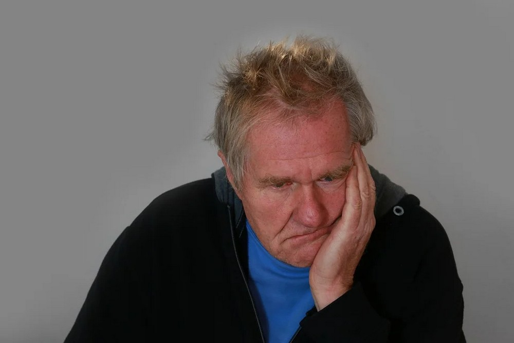

Legătura pierderii auzului cu demența, problemele medicinei moderne și alte motive a avea grijă de auzul dvs. chiar acum
27.04.2022
Am vrut să vorbesc despre pierderea auzului de mult timp. Relevanța acestui subiect crește de la an la an. Deja acum la fiecare 20 de persoane, există una cu dizabilități din cauza deficienței de auz. Și asta nu mai vorbim de cazuri mai puțin grave.
Deja acum cel puțin 5% din populația lumii suferă de pierderi grave de auz. Adică, în întreaga lume, există una din 20 de persoane cu dizabilități de auz, ca să nu mai vorbim de cazuri mai puțin severe.
Nu este nimic de surprins: stilul de viață al unei persoane moderne nu favorizează sănătatea bună. Suntem înconjurați de zgomotul de construcție și reparații, motoarelor și uneltelor. Tinerii ascultă adesea muzică la volum mare la căști, dăunând țesuturilor organelor auditive. Cu toate acestea, cel mai mare procent de persoane cu deficiențe de auz reprezintă persoanele de peste 45 de ani.

Cauzele deficienței auzului
În primul rând, să analizăm exact modul în care corpul preia sunetele. Acest lucru ne va permite să înțelegem ce cauzează problemele cu percepția sunetului.
- În primul rând, membrana subțire a timpanului captează vibrațiile și le transmite oaselor auditive mici.
- Vibrațiile trec adânc în urechea internă, afectând lichidul din structura urechii numit cohlee.
- Apoi se transformă în impulsuri electrice și trec prin nervi către creier.
- Structurile creierului le procesează și extrag informații despre sursa de sunet și poziția sa în spațiu.
- Abia atunci ne dăm seama ce se întâmplă. Întregul proces durează milisecunde.
Dificultăți pot apărea în aproape orice etapă. Deteriorarea mecanică, inflamația sau dopul obișnuit de sulf au un efect la fel de grav asupra auzului. Persoanele în vârstă se confruntă adesea cu pierderea auzului din cauza îmbătrânirii banale a țesuturilor: capilarele se deteriorează, și organele sunt insuficient alimentate cu nutriție, iar nervii nu pot transmite rapid și eficient un semnal.
O listă scurtă de cauze posibile:
- ascultarea regulată a sunetelor puternice;
- leziuni la cap;
- boli infecțioase;
- administrarea unor medicamente;
- vârstă;
- cancer și alte neoplasme.
Ce riscuri prezintă pierderea auzului
Mulți oameni nu își dau seama cât de important este auzul în viața de zi cu zi. Nu este vorba doar de modul de comunicare, când în loc de o conversație telefonică este mai ușor să treci la corespondență. Auzul este unul dintre pilonii activității mentale.
Efecte asupra sănătății
Pierderea auzului este cu adevărat periculoasă. Ne orientăm în spațiu cu ajutorul urechilor noastre, aparatul vestibular este conectat direct la nervul auditiv. Și pierderea auzului poate provoca întreruperi în acest proces.
O persoană se poate confunda pe carosabil, de exemplu, poate auzi un urlet de sirenă, dar nu înțelege de unde vine și unde să meargă. Sau se poate simți o amețeală bruscă și să cadă.
Percepția sunetului afectează și memorarea. Pentru a compensa problemele de auz, organismul redistribuie resursele. Prin urmare, problemele cu concentrarea, incapacitatea de a evidenția principalul lucru și lacunele în memorie.

Unul dintre cele mai frecvente simptome ale pierderii auzului este tinitusul, țiuitul din urechi. Acesta provoacă stres emoțional, crește nivelul de stres de fond. Expunerea prelungită la psihic duce la iritabilitate și anxietate, epuizare nervoasă.
Statisticile sunt îngrijorătoare: o ușoară pierdere a auzului crește probabilitatea de demență senilă, boli Alzheimer și Parkinson de 2 ori, iar pierderea severă a auzului – de 5 ori.
Сonsecințe sociale
Pacienții cu pierderea auzului diagnosticată observă adesea că boala îi distanțează foarte mult de ceilalți. Comunicarea cu o persoană surdă necesită răbdare și înțelegere: astfel de oameni întreabă adesea din nou, trebuie să mențină contactul vizual cu interlocutorul etc.
Să uiți de o întâlnire rotundă, să nu auzi ceva important — comunicarea constă în astfel de fleacuri. Este deosebit de dificil pentru persoanele în vârstă, nu toți se înțeleg cu tehnologia la nivel pentru a menține comunicarea în rețelele sociale sau Messenger.
Sentimentul de izolare prezintă dezvoltarea depresiei.
Tratamentul pierderii auzului
Asistența medicală tratează problemele de auz cu o conivență de neiertat. Gândiți-vă, chiar și în țările dezvoltate, cel mai bun lucru pe care oamenii îl pot oferi este un aparat auditiv și un pachet de vitamine. De fapt, lipsa unui tratament adecvat este principalul factor al pierderii rapide a auzului.
Mai mult, utilizarea aparatelor auditive doar dăunează persoanei. Preluând o parte din muncă, ei contribuie la relaxare, reduc activitatea structurilor auditive. Această abordare accelerează doar degenerarea țesuturilor.
Metodă alternativă de restaurare a auzului
La universitatea noastră, căutarea unui remediu a fost efectuată în ultimii 4 ani.
Căutam un remediu universal care să aibă o formulă echilibrată în mod implicit și să nu aibă efecte secundare severe. Deoarece pierderea auzului afectează în majoritatea cazurilor persoanele cu vârsta peste 45 de ani, aveam nevoie de substanțe eficiente, dar cât mai inofensive. De aceea am ales ingrediente naturale.
Studii recente au arătat că are cel mai bun efect.

În primul rând, este o sursă de cannabidiol - o substanță care are un efect de restaurare și întărire asupra terminațiilor nervoase. În plus, este capabil să amelioreze inflamația, care este necesară cu pierderea auzului datorată eustachitei, inflamației catarre a urechii medii și a altor otite medii.
În al doilea rând, conține o combinație unică de acizi grași polinesaturați, incluzând acizii Omega 3-6-9, gamma-linolenic, oleic și stearic. În combinație, elimină aproape toți factorii care cauzează pierderea auzului:
- curăță și vindecă vasele și capilarele astfel încât organele auditive să primească suficientă nutriție și să fie alimentate cu oxigen;
- întăresc membranele celulare și stimulează metabolismul țesuturilor pentru a elimina stagnarea;
- cresc imunitatea, contracarează efectele negative ale mediului și ale microorganismelor patogene;
- protejează țesuturile de stresul oxidativ prin legarea radicalilor liberi și prevenirea îmbătrânirii țesuturilor;
- stimulează funcțiile cognitive, îmbunătățesc atenția și memoria.
În plus față de substanțele care elimină cauzele pierderii auzului, am îmbogățit compoziția cu vitamine și oligoelemente care au un efect de întărire. Eficacitatea a impresionat experții laboratorului nostru și a fost confirmată ulterior de rezultatele testelor.
Studii clinice
302 pacienți cu pierdere de auz confirmată de diferite origini au fost selectați pentru testare. După aceea, au fost împărțiți aleatoriu în două grupuri: unul a primit un placebo, ceilalți au luat .
Rezultatele unui studiu randomizat controlat prin placebo:
| Placebo | ||
|---|---|---|
| Îmbunătățirea auzului vizibilă | 95% | 3% |
| Îmbunătățirea abilităților cognitive | 87% | 5% |
| Eliminarea completă a tinitusului | 92% | 2% |
Pacienții au vorbit bine despre experiența utilizării medicamentului: cei mai mulți au susținut că calitatea vieții lor a crescut semnificativ. Este deosebit de plăcut că mulți au stabilit relații cu cei dragi și au redescoperit hobby-uri intelectuale și creative.
De unde să cumpere
Medicamentul a intrat recent pe piață, deci în prezent nu se vinde în farmacii. Dar puteți lăsa o cerere pe site-ul oficial. Operatorul vă va contacta: se va consulta cu privire la toate aspectele legate de produs și va organiza livrarea. Coletul va fi livrat prin curier în termen de o săptămână.
Acum poate fi achiziționat cu o reducere uriașă. Grăbiți-vă, promoția va dura până la 12.04.2022 .
Și un ultim sfat pentru cititorii mei. Principalul lucru în tratament este timpul potrivit. Cu cât aveți grijă mai devreme de sănătatea dumneavoastră, cu atât sunt mai puțin probabile complicații. Aveți grijă de sănătatea dvs.
Nu este prima dată când comand. Mai întâi am cumpărat pentru mine și apoi am decis să fac un cadou pentru sora mea. Am fost foarte impresionată de efect.
Am lucrat la o fabrică de textile jumătate din viață, până la 40 de ani aproape că nu auzisem nimic. Am aflat recent despre și am decis să încerc. M-a ajutat, am simțit diferența după 2 săptămâni.
Am comandat deja, aștept coletul meu.
Mulțumesc pentru articol, a fost foarte util. Și promoția este foarte convenabilă, tocmai am avut timp să comand.
Este înfricoșător să te gândești cât de mult depinde de auz. Alzheimer, demență
Am cumpărat acum o lună și sunt foarte fericită. Recent am putut vorbi cu fiul meu la telefon, am auzit aproape totul.
Nu credeam cu adevărat că auzul poate fi vindecat la vârsta mea. Se pare că m-am îndoit în zadar. este într-adevăr un miracol!
Am stat doar 10 minute astăzi și am ascultat păsările cântând, este foarte mișto. Vă mulțumesc foarte mult pentru sfat!
Am cumpărat-o pentru bunica mea, este foarte fericită.
A fost livrat în 3 zile, foarte repede.
Lasă feedback-ul:
Comentariul dvs. este în procesul de moderare